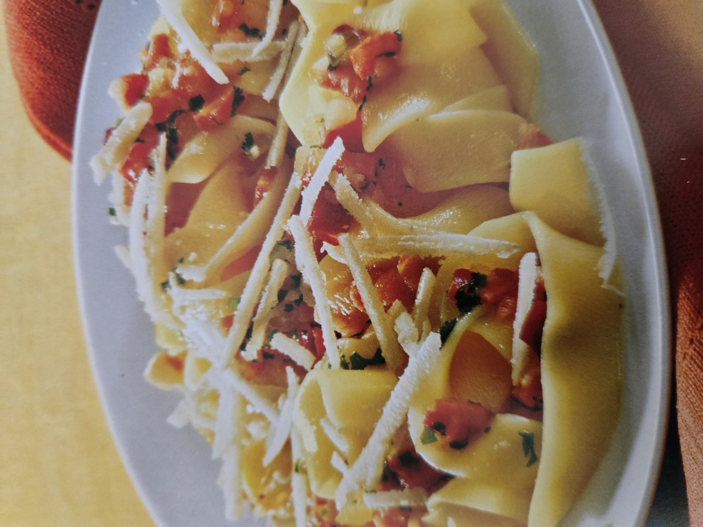

Zurück zur HomepageEine gute Specksauce lebt von einem einzigen, aber entscheidenden Prinzip: Geduld beim Auslassen des Specks. Wird er langsam und bei mittlerer Hitze knusprig gebraten, gibt er sein volles, rauchig-würziges Aroma an das Fett ab, das später die gesamte Sauce trägt. Dieses ausgelassene Fett ist der eigentliche Geschmacksträger und macht den Unterschied zwischen einer gewöhnlichen und einer wirklich feinen Sauce aus.
Besonders fein wird die Sauce durch das Zusammenspiel von herzhaftem Speck mit einer sanften, cremigen Komponente – sei es Sahne, ein Schuss Weisswein oder etwas Pasta-Kochwasser mit Parmesan. Diese Balance zwischen kräftig-salzigem Speckgeschmack und samtiger Textur sorgt dafür, dass sich die Sauce geschmeidig um jede Nudel legt, ohne zu schwer oder eintönig zu wirken.
Auch die kleinen Details machen den Unterschied: eine fein gehackte Zwiebel oder Schalotte, die im Speckfett glasig gedünstet wird, ein Hauch frisch gemahlener schwarzer Pfeffer, vielleicht etwas geriebener Pecorino zum Abschluss. Diese Nuancen verleihen der Sauce Tiefe und Komplexität, ohne von der Hauptzutat – dem Speck – abzulenken.
Am Ende überzeugt diese Specksauce vor allem durch ihre unkomplizierte Ehrlichkeit: wenige, hochwertige Zutaten, handwerklich richtig zubereitet, ergeben ein Gericht mit grossem Genusswert. Sie ist der Beweis dafür, dass rustikale Küche, wenn sie mit Sorgfalt umgesetzt wird, ebenso raffiniert schmecken kann wie ein aufwendiges $ Gourmetgericht.